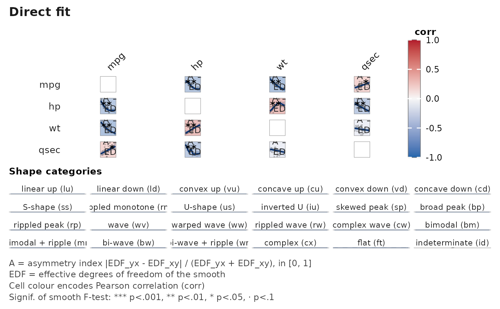
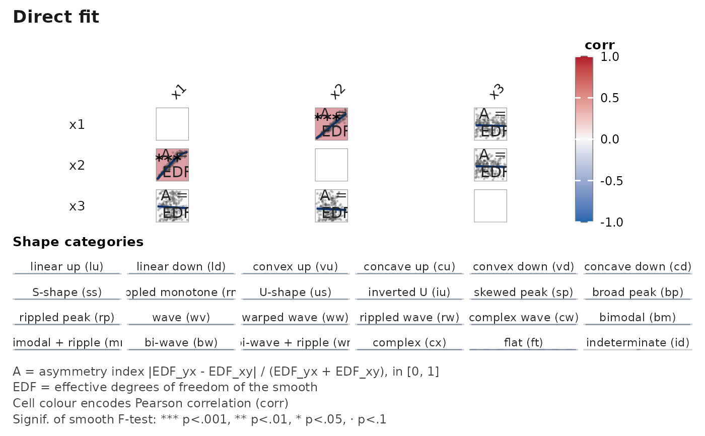
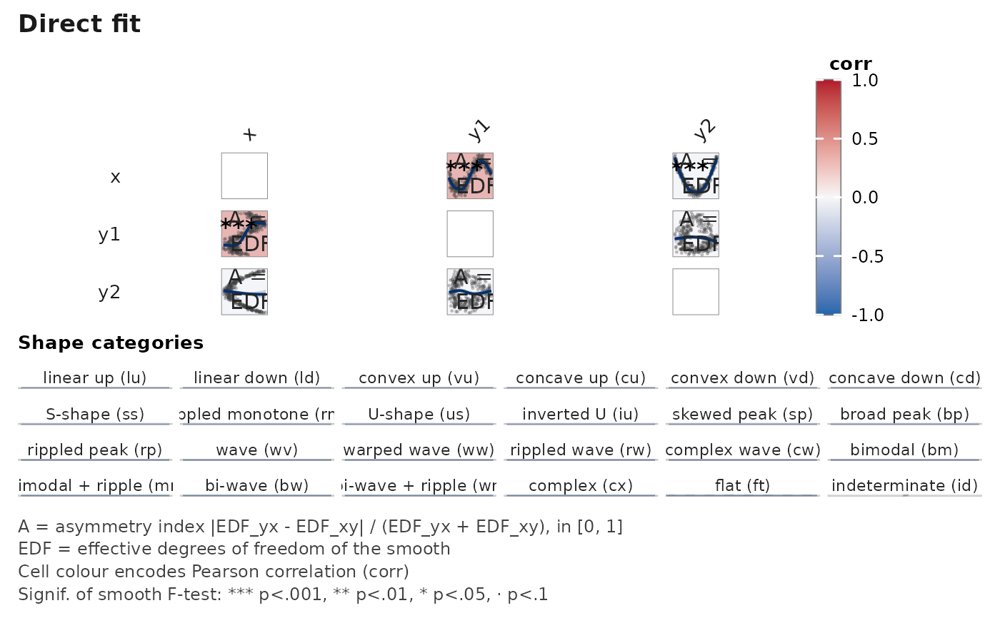
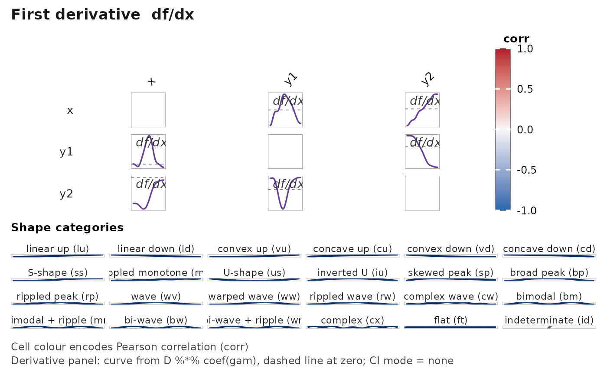
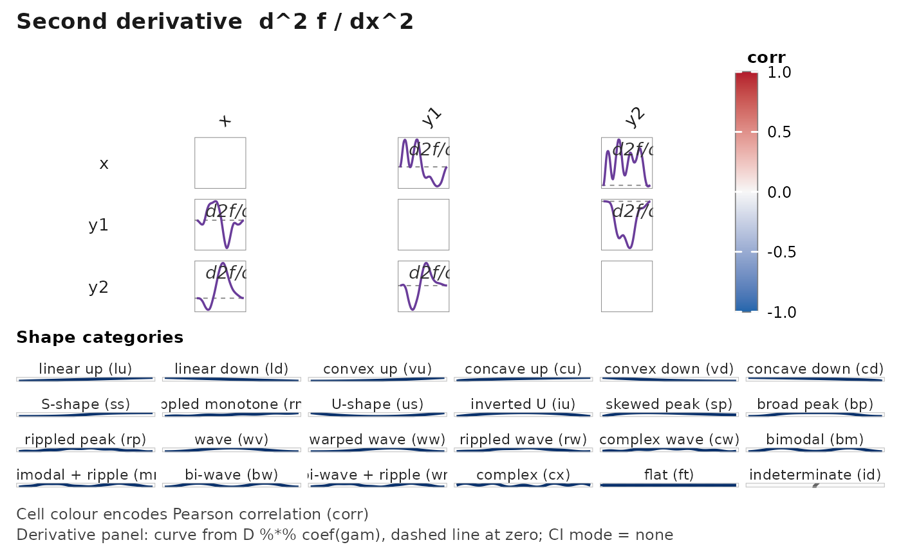
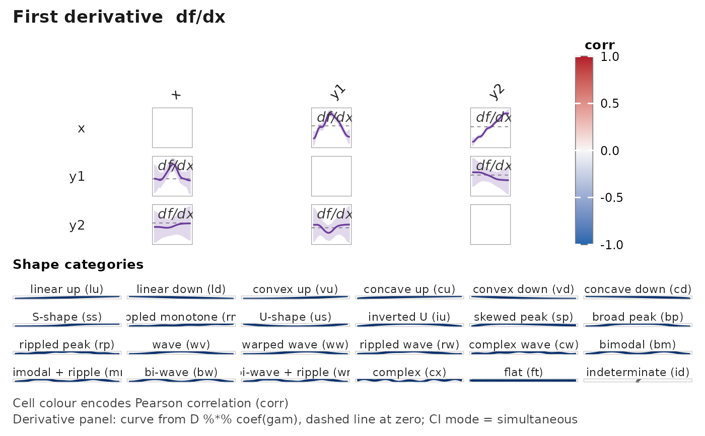

![[Experimental]](figures/lifecycle-experimental.svg)
Render a pairwise, asymmetric matrix of smoothed associations between
numeric variables. Each cell [i, j] where i != j shows the fitted
spline from mgcv::gam():
Upper triangle (
i < j):gam(x_j ~ s(x_i) + <adjust>).Lower triangle (
i > j):gam(x_i ~ s(x_j) + <adjust>).Diagonal: blank panel when labels live on the border (default), or a variable-name label when
labels = "diagonal".
The two triangles intentionally differ — the asymmetry reveals heteroscedasticity, leverage, and directional non-linearity that a single scalar correlation hides.
Usage
janusplot(
data,
vars = NULL,
adjust = NULL,
method = "REML",
k = -1L,
bs = "tp",
order = c("original", "hclust", "alphabetical"),
show_data = TRUE,
show_ci = TRUE,
display = c("fit", "d1", "d2"),
derivative_ci = c("none", "pointwise", "simultaneous"),
derivative_ci_nsim = 1000L,
n_grid = NULL,
colour_by = c("pearson", "spearman", "kendall", "edf", "deviance_gap", "none"),
fill_by = NULL,
palette = NULL,
annotations = c("edf", "A"),
shape_cutoffs = janusplot_shape_cutoffs(),
show_shape_legend = TRUE,
glyph_style = c("ascii", "unicode"),
labels = c("border", "diagonal", "none"),
diagonal = c("auto", "blank", "name", "density"),
label_srt = 45,
label_cex = 1,
signif_glyph = TRUE,
show_asymmetry = NULL,
na_action = c("pairwise", "complete"),
parallel = FALSE,
with_data = FALSE,
text_scale_diag = 1,
text_scale_off_diag = 1,
show_glossary = TRUE,
glossary_scale = 1,
...
)Arguments
- data
A data frame with numeric columns to include.
- vars
Character vector of column names to use.
NULL(default) uses all numeric columns indata. Non-numeric columns trigger an error listing offenders.- adjust
A one-sided formula RHS giving additional covariates and/or random effects to include in every pairwise GAM. For example,
adjust = ~ s(age) + s(site, bs = "re")fitsgam(y ~ s(x) + s(age) + s(site, bs = "re"))for each pair. DefaultNULLfits unadjusted pairwise smooths.- method
Smoothing-parameter estimation method passed to
mgcv::gam(). Default"REML"per mgcv recommendation.- k
Integer, or named list mapping variable names to integers. Basis dimension for
s(). Default-1L(mgcv's automatic choice).- bs
Basis type for
s(). Default"tp"(thin plate).- order
One of
"original"(default),"hclust"(reorder by hierarchical clustering of Pearson correlations), or"alphabetical".- show_data
Logical. If
TRUE(default), overlay raw data points (low alpha) behind each spline. Only applies whendisplay = "fit"; derivative panels never overlay raw data.- show_ci
Logical. If
TRUE(default), overlay the 95% confidence envelope frompredict(gam, se.fit = TRUE)on the fit panel (i.e. whendisplay = "fit"). CI rendering on derivative panels is controlled separately byderivative_ci.- display
One of
"fit"(default),"d1", or"d2". Selects which single quantity is rendered in every off-diagonal cell of the matrix."fit"— the fitted smooth \(\hat f(x)\); default, behaviour identical to the pre-derivative release."d1"— the first derivative \(\hat f'(x)\) of the fitted smooth. Zero crossings localise turning points of \(\hat f\)."d2"— the second derivative \(\hat f''(x)\). Zero crossings localise inflection points of \(\hat f\).
A single matrix shows a single quantity by design: stacked multi-panel cells crowd the matrix at any realistic variable count. To compare fit against derivative, render two or three
janusplot()calls side-by-side; each call keeps its ownwith_data = TRUEsummary table tagged with thedisplaycolumn.Orders \(k \ge 3\) are not exposed — higher-order derivatives of penalised regression splines amplify noise and rarely carry usable signal at realistic sample sizes. See
vignette("janusplot")for the theoretical justification and applied use-cases.- derivative_ci
One of
"none"(default),"pointwise", or"simultaneous". Controls whether — and how — a 95% confidence ribbon is drawn underneath the derivative curve whendisplay %in% c("d1", "d2"). Ignored whendisplay = "fit"."none"— no ribbon. The curve and the zero reference line are all you see. Default, because pointwise ribbons overshoot nominal coverage as a joint region and can invite over-reading of local features."pointwise"— 95% pointwise ribbon from \(\sqrt{\mathrm{diag}(D V_p D^\top)}\) (Wood 2017 §7.2.4). Valid marginally; not a simultaneous statement."simultaneous"— 95% simultaneous band via the Monte Carlo construction of Ruppert, Wand & Carroll (2003) popularised for GAMs by Simpson (2018, Frontiers Ecol. Evol. 6:149): draw \(B\) samples \(\tilde{\boldsymbol\beta} \sim \mathcal{N}(\hat{\boldsymbol\beta}, V_p)\), compute \(\max_x |D_i(\tilde{\boldsymbol\beta} - \hat{\boldsymbol\beta})| / \mathrm{se}_i\), and use the \((1-\alpha)\) quantile as a critical multiplier on the pointwise SE. Valid for feature localisation ("where is \(\hat f'(x)\) significantly non-zero").
- derivative_ci_nsim
Integer. Number of Monte Carlo samples used when
derivative_ci = "simultaneous". Default1000L— a compromise between coverage accuracy (Simpson 2018 uses 10000) and CPU budget across every pair in a medium-sized matrix. Ignored for any otherderivative_ci.- n_grid
Integer or
NULL. Number of equally-spaced points used to evaluate each fitted smooth (and its derivatives). DefaultNULLresolves to100whendisplay = "fit"and200otherwise, because finite-difference second derivatives visibly degrade below \(\sim 150\) points on moderate-ksmooths. Supplyingn_griddirectly overrides both defaults. Larger grids shift the numerical shape-metric values (\(M\), \(C\), turning / inflection counts) slightly because they are computed on this same grid. Shapes and asymmetry are the primary reading;M,Cand the counts are secondary diagnostics and the grid-induced drift is tolerable.- colour_by
One of
"pearson"(default),"spearman","kendall","edf","deviance_gap", or"none". Encodes the per-cell fill colour by the chosen scalar. Correlation choices use a diverging palette with limitsc(-1, 1)and a sharedcorrcolour-bar title;"edf"and"deviance_gap"use a sequential palette labelled by the metric.- fill_by
Deprecated alias for
colour_by. If supplied emits a single soft deprecation warning and is forwarded tocolour_by.- palette
Character. Colour palette for the cell fill scale. Defaults to
"RdBu"whencolour_byis a correlation and"viridis"otherwise. Sequential choices:"viridis","magma","inferno","plasma","cividis","mako","rocket","turbo"(not CB-safe),"YlOrRd","YlGnBu","Blues","Greens". Diverging choices:"RdYlBu","RdBu","PuOr","Spectral"(not CB-safe). Passing a sequential palette whilecolour_byis a correlation silently upgrades to the default diverging palette.- annotations
Character vector, a subset of
c("edf", "A", "shape", "code"). Controls which corner annotations appear on each off-diagonal cell:"code"— 2-letter ASCII shape code, top-left corner."A"and"edf"— asymmetry index and effective degrees of freedom, stacked bottom-left."shape"— shape glyph (Unicode or ASCII perglyph_style), bottom-right corner.
Default
c("edf", "A")."code"and"shape"occupy distinct corners so both can be requested together. Seejanusplot_shape_hierarchy()for the full code list.- shape_cutoffs
Named list of classification thresholds used to map the continuous shape indices into discrete
shape_categorylabels; seejanusplot_shape_cutoffs().- show_shape_legend
Logical. If
TRUE(default), attach a standing shape-types legend plate below the matrix that illustrates every category in the taxonomy as a canonical thumbnail spline. Independent ofannotations.- glyph_style
One of
"ascii"(default) or"unicode". Controls how cell shape glyphs render when"shape"is included inannotations. Default is"ascii"for maximum portability across typesetting pipelines; switch to"unicode"only when the target font is known to cover the curve glyph set.- labels
One of
"border"(default),"diagonal", or"none". Controls where variable names are rendered:"border"— names along the top (rotated perlabel_srt) and left margins of the matrix; diagonal cells are left blank. Mirrorscorrplot'stl.pos = "lt"convention."diagonal"— names centred on the diagonal cells (the pre-0.1 layout)."none"— labels suppressed entirely; diagonal cells blank.
- diagonal
One of
"auto"(default),"blank","name", or"density". Controls what is rendered in the diagonal cells of the matrix."auto"— preserves the historical behaviour: variable name whenlabels = "diagonal", blank otherwise."blank"— empty bordered panel (uniform grid reading)."name"— variable name centred in the cell, bold."density"— kernel density of the variable filled in translucent grey, with a rug of raw values along the bottom edge. Mirrors theGGally::ggpairsconvention; surfaces tail weight, bimodality, and support clipping that the pairwise smooths alone cannot reveal. Variable names should come from the border (labels = "border", the default) when this mode is on.
- label_srt
Numeric. Rotation (degrees) of top labels when
labels = "border". Default45; set to0for horizontal or90for vertical. Ignored whenlabels != "border".- label_cex
Positive numeric multiplier on the border-label font size. Default
1. Ignored whenlabels = "none".- signif_glyph
Logical. If
TRUE(default), annotate cells with·/*/**reflecting the smooth's F-test p-value.- show_asymmetry
Deprecated. Use
annotationsinstead ("A" %in% annotations). When supplied, a soft deprecation warning fires and the argument is merged intoannotations.- na_action
One of
"pairwise"(default; per-cell complete observations) or"complete"(listwise; all cells use the same rows).- parallel
Logical. If
TRUE, usefuture.apply::future_mapply()to fit pairs in parallel. Requires thefuture.applypackage and a user-configuredfuture::plan(). DefaultFALSE.- with_data
Logical. If
TRUE, return a two-element listlist(plot, data)wheredatais a flat per-cell summary (one row per off-diagonal cell) of everything the plot displays. Thedataelement is always a plaindata.frame(base R — nodata.tabledependency). DefaultFALSE— in which case only the ggplot is returned.- text_scale_diag
Positive numeric multiplier applied to the diagonal variable-name labels. Default
1. Diagonal labels additionally auto-shrink for long variable names (nchar(var) > 10) so they fit the cell regardless of this value.- text_scale_off_diag
Positive numeric multiplier applied to all off-diagonal annotations (
n/EDFreadouts, significance glyphs, asymmetry-index labels). Default1. Use< 1when cells are small and the annotations crowd the fit line; use> 1for presentation plots.- show_glossary
Logical. If
TRUE(default), attach a multi-line caption below the matrix describing the on-plot abbreviations (n,EDF,A, fill encoding, significance glyphs). Only keys actually displayed are listed.- glossary_scale
Positive numeric multiplier on the glossary caption font size. Default
1.- ...
Additional arguments passed to
mgcv::gam().
Value
If with_data = FALSE (default), a ggplot2::ggplot object
(via patchwork::wrap_plots()) carrying a top-of-matrix title
that names the displayed quantity ("Direct fit",
"First derivative f'", or "Second derivative f''"). If
with_data = TRUE, a list with two elements: plot (the
ggplot) and data (a tidy table with columns var_x, var_y,
position, n_used, edf, pvalue, signif, dev_exp,
asymmetry_index, cor_pearson, cor_spearman,
cor_kendall, tie_ratio, monotonicity_index,
convexity_index, n_turning_points, n_inflections,
flat_range_ratio, shape_category, colour_value,
display, one row per off-diagonal cell). The display
column tags which quantity the call rendered, so separate
calls for fit / d1 / d2 yield comparable, stackable tables.
Derivative curves themselves (grid of \(x\), fitted
\(\hat f^{(k)}\), SE) live on janusplot_data() — see there.
See also
janusplot_data() for the raw per-cell fits + metrics.
Other smooth-associations:
janusplot_data()
Examples
# Small numeric data frame — runs in under a second
janusplot(mtcars[, c("mpg", "hp", "wt", "qsec")])

# \donttest{
# Heteroscedastic DGP: Pearson r is ~ 0.9 but the inverse fit is
# clearly non-linear, yielding asymmetry index > 0.5.
set.seed(2026L)
n <- 200L
x1 <- stats::runif(n, 0, 10)
x2 <- x1 + stats::rnorm(n, sd = 0.2 * x1)
janusplot(data.frame(x1 = x1, x2 = x2, x3 = stats::rnorm(n)))

# A single matrix renders a single quantity. To compare the fit
# against its derivatives, render three calls and place them
# side-by-side; each call's title makes the quantity explicit.
set.seed(2026L)
xs <- stats::runif(300L, -3, 3)
df <- data.frame(
x = xs,
y1 = sin(xs) + stats::rnorm(300L, sd = 0.3),
y2 = xs^2 + stats::rnorm(300L, sd = 0.6)
)
janusplot(df, display = "fit")

janusplot(df, display = "d1")

janusplot(df, display = "d2")

# Simultaneous CI bands on a derivative panel, per Simpson (2018).
janusplot(df, display = "d1", derivative_ci = "simultaneous")

# }